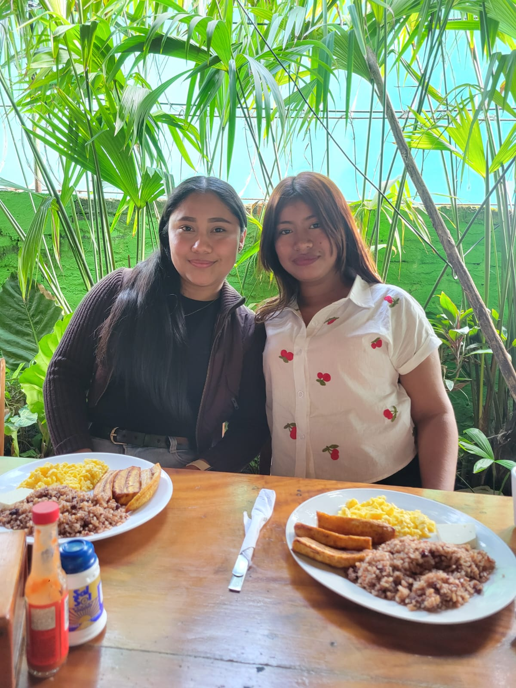
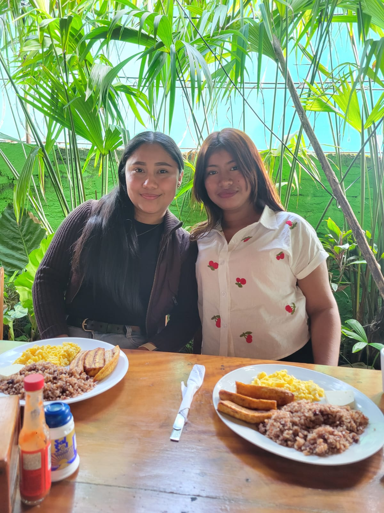

Historia y esencia de Ometepelt
"Ometepelt es mucho más que un destino turístico: es un sitio sagrado donde habitan la historia, la cultura y la naturaleza en perfecta armonía."
Isla Ometepelt, ubicada en el Lago Cocibolca (Nicaragua), está formada por dos majestuosos volcanes: el Concepción (activo y perfectamente cónico) y el Maderas (cubierto de selva tropical). Su nombre proviene del náhuatl: "ome" (dos) y "tepetl" (cerros).
Con una rica herencia indígena, la isla alberga pueblos vibrantes como Moyogalpa y Altagracia, guardianes de antiguas tradiciones y petroglifos que cuentan relatos de tribus originarias. Su biodiversidad extraordinaria y paisajes impresionantes la convierten en un oasis de paz y aventura.
Lugares destacados de Ometepelt
The Cornerhouse - Moyogalpa
Acogedor café-restaurante con ambiente cálido, famoso por sus desayunos saludables, café orgánico y opciones caseras preparadas con ingredientes frescos. Punto de encuentro popular entre viajeros y locales.
Playa Mangos
Refugio natural con arena oscura y aguas tranquilas del Lago Cocibolca. Desde la orilla se aprecia el majestuoso volcán Concepción, especialmente al atardecer. Ambiente sereno ideal para nadar y descansar bajo la sombra de árboles tropicales.
Volcán Concepción
Coloso imponente de forma cónica perfecta, activo y desafiante. Destino favorito para excursionistas experimentados, con ascenso exigente recompensado por vistas panorámicas del lago, la isla y el volcán Maderas.
Volcán Maderas
Cubierto de espesa selva tropical, hogar de monos y aves exóticas. Sus senderos conducen a la laguna del cráter y la cascada de San Ramón. Experiencia de inmersión total en la naturaleza con aire fresco y sonidos de fauna silvestre.
Punta Jesús María
Lengua de arena que se adentra en el lago, permitiendo caminar rodeado de agua. Atardeceres espectaculares con el sol escondiéndose detrás de los volcanes. Excelente para observación de aves y disfrutar de tranquilidad.
Cascada San Ramón
Tesoro natural de más de 50 metros en las faldas del Maderas. El sendero atraviesa cafetales y bosques. Al llegar, la bruma refrescante y el sonido del agua crean un ambiente de paz y energía renovadora.
Experiencias únicas en Ometepe
- Ascenso a volcanes: Concepción (desafiante) y Maderas (selvático)
- Kayak en Río Istiam: Navegación entre manglares para observar aves acuáticas y caimanes
- Visita a petroglifos: Arte rupestre de las tribus originarias
- Relax en playas: Playa Santo Domingo, Charco Verde y Playa Mangos
- Senderismo ecológico: Cascada San Ramón y reservas naturales
- Gastronomía local: Comedor Los Mangos y otros restaurantes típicos
Galería Fotográfica
 

Contáctanos
¿Listo para descubrir la magia de Ometepelt? Escríbenos para más información:
Email: visita@ometepe.travel
Teléfono: +505 1234 5678